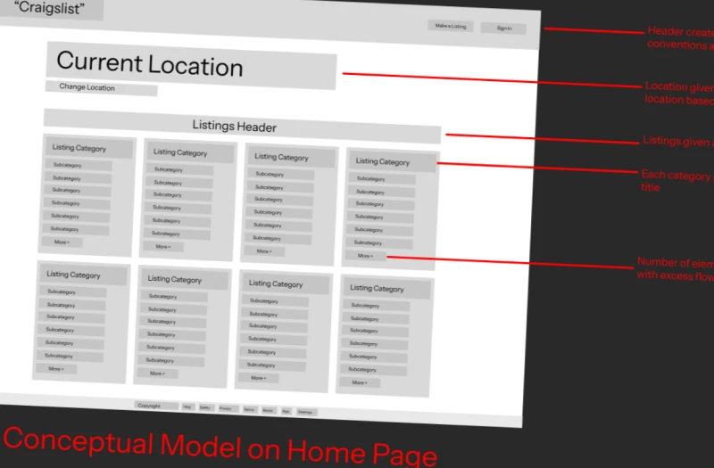
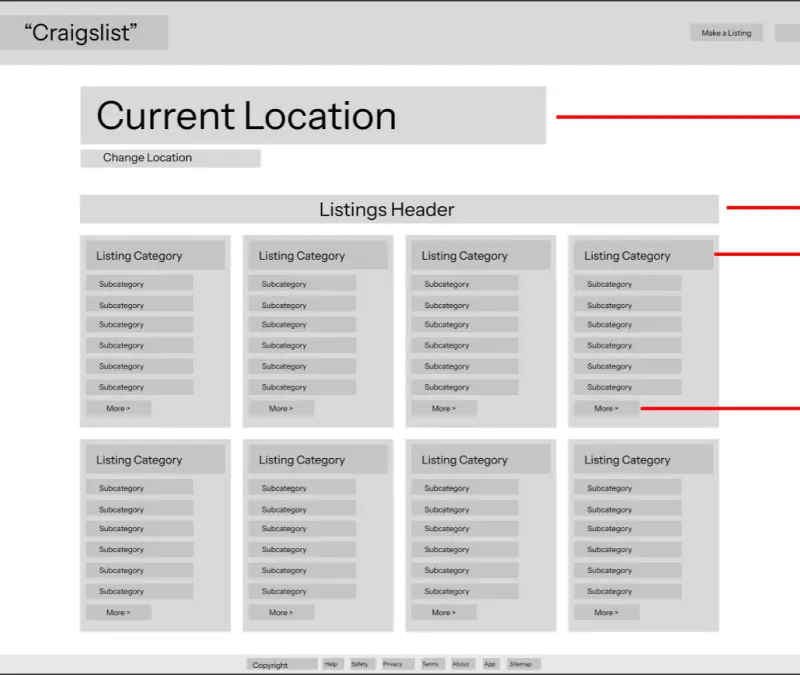
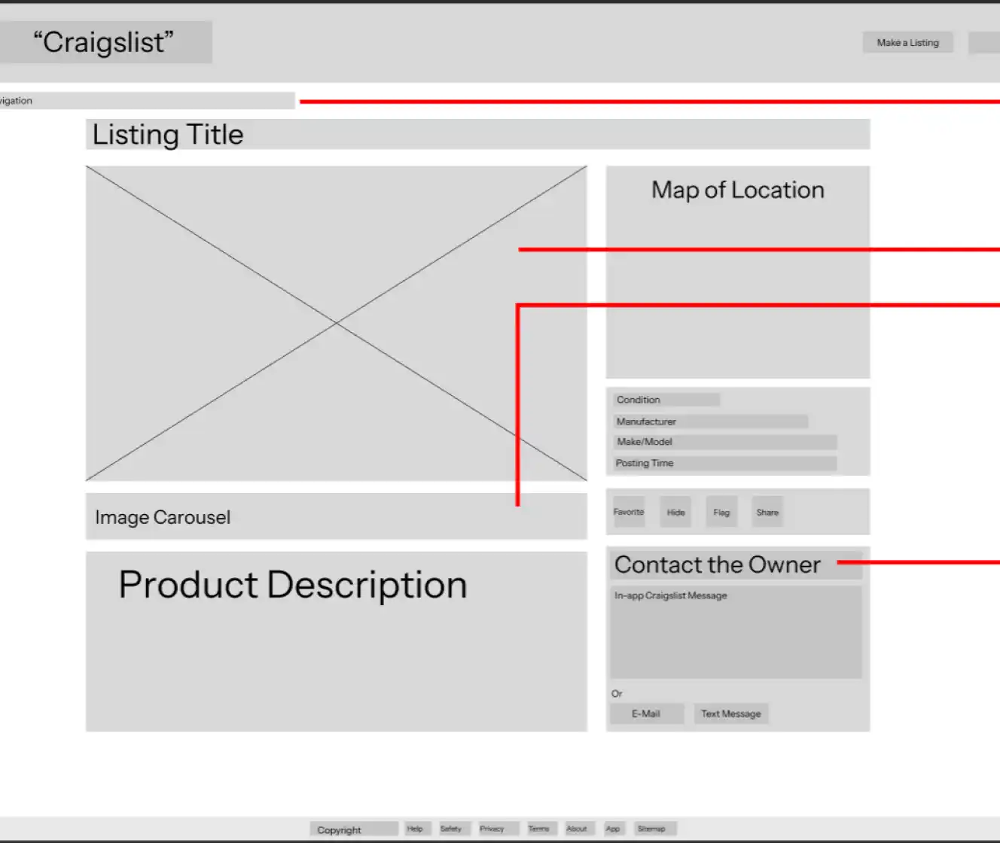
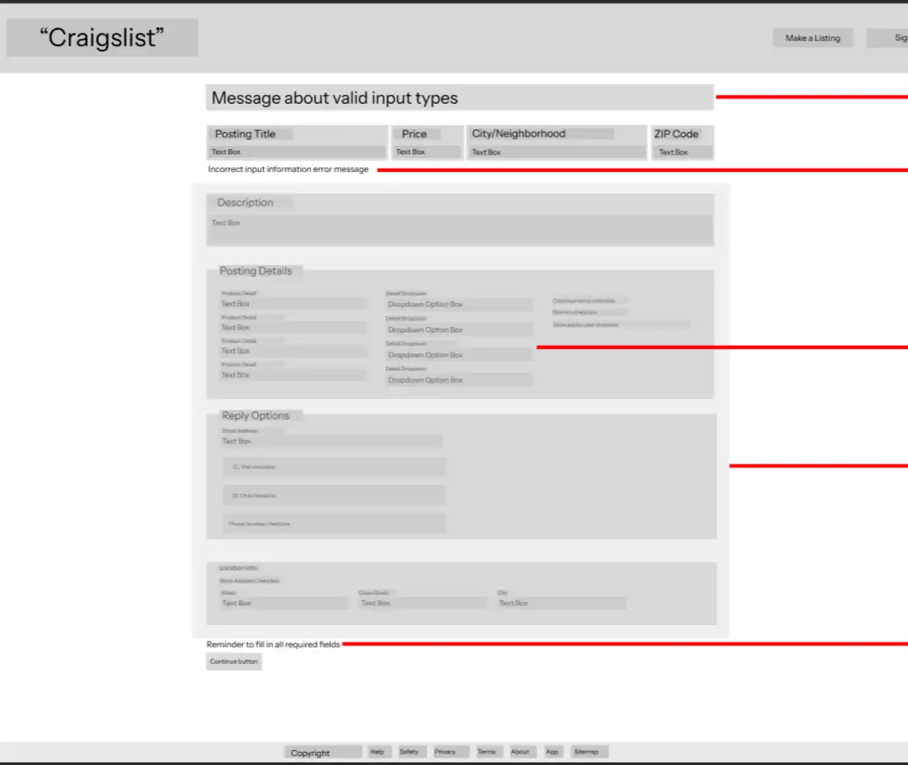

Craigslist Usability Redesign: Improving an Outdated UI

Tools: Figma, Google Slides
Duration: 1 month
Roles:
Usability Evaluator
Overview
For my Human-Computer Interaction final project, my team analyzed three pages of Craigslist to identify usability errors and redesign them for clarity and accessibility. Craigslist’s interface is famously cluttered and inconsistent, making it ideal for a usability overhaul.
The Problem
Craigslist’s outdated interface suffers from poor hierarchy, limited feedback, and inconsistent visual structure, making browsing and posting listings unnecessarily difficult. My goal was to modernize these pages while preserving the platform’s simple, community-driven identity.
Research
I conducted a heuristic evaluation based on Jakob Nielsen’s usability heuristics and noted recurring complaints from online reviews. The main usability themes were poor information hierarchy, low discoverability, and a lack of feedback mechanisms. These findings shaped my redesign focus areas.
Pages Evaluated
- The Home Page: Suffers from poor information hierarchy and an unintuitive structure
- A Product Listing Page: Lacks key navigation aids and forces users to rely too much on memory
- The Posting Form: Has no error handling and lacks constraints to guide user input

Wireframe Redesigns
Wireframe 1: Home Page
- Reorganized header to align with user expectations
- Increased location prominence for easier regional browsing
- Introduced collapsible category menus and capped visible listings for cleaner hierarchy
Wireframe 2: Product Page
- Added in-app messaging for direct contact with sellers
- Implemented larger image carousel and improved breadcrumb navigation
Wireframe 3: Listing Form
- Added input prompts and live error feedback
- Introduced dynamic dropdowns that disable incompatible options
- Required completion of prerequisite fields before later sections unlock
Check out the Figma file here!
Integrating UX Principles
I applied concepts from Don Norman’s The Design of Everyday Things throughout my redesign:
- Conceptual Models on the Home Page: Improved hierarchy and organization to align with user expectations
- Knowledge in the Head vs. the World on the Product Page: Provided visual and interactive aids to reduce reliance on memory
- Feedback & Constraints on the Posting Form: Implemented structured guidance and constraints to prevent errors
Collaboration and Outcome
By focusing on usability principles and common pain points, my redesigns brought clarity, accessibility, and ease of use to Craigslist’s interface. This project reinforced my ability to analyze usability issues critically and propose effective design solutions, skills that are essential for my work in UX design
This project is a conceptual redesign created for educational purposes only.